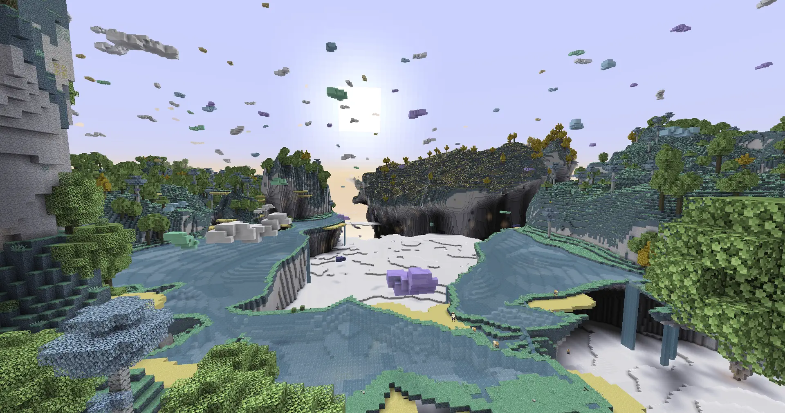
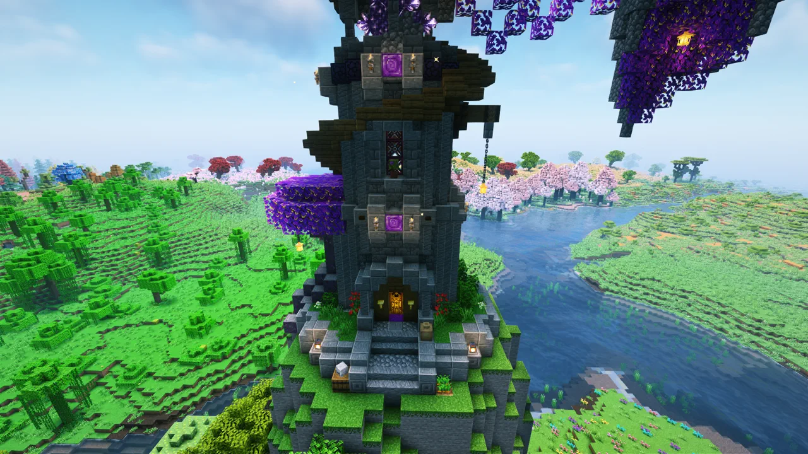
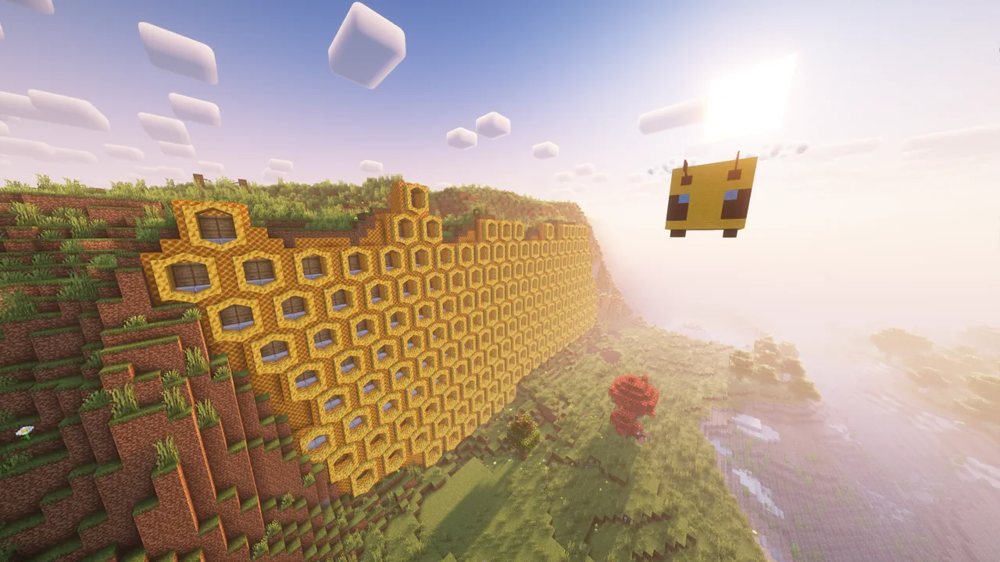
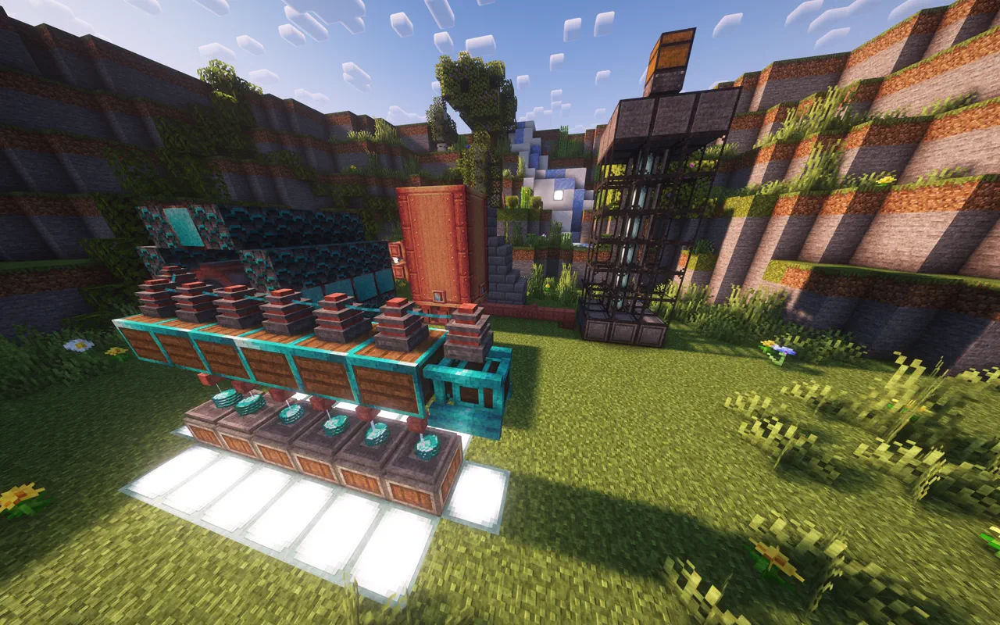

Für starke Rechner
Fluffy
Volle Weite, volle Details. Gedacht für Karten der Klasse RX 7900 XT aufwärts.
- 10 GiB Heap, 14 Chunks Vanilla-Sichtweite
- Distant Horizons bis 256 Chunks LoD
- Complementary Reimagined auf High
Minecraft __MINECRAFT_VERSION__ · NeoForge · Deutsch
Ein gemütliches Modpack aus Technik, Tieren, Magie und großen Erkundungszielen – kuratiert, getestet und in zwei Minuten spielbereit.
Hasencraft läuft über den Prism Launcher. Du kopierst eine Importadresse, fügst sie in Prism ein – den Rest erledigt der Launcher.
Prism Launcher installieren und dein Microsoft-Konto anmelden. Java 21 richtet Prism selbst ein.
Unten das passende Profil wählen und die Importadresse in die Zwischenablage kopieren.
Instanz hinzufügen → Importieren, Adresse einfügen, einmal starten. Fertig.
Volle Weite, volle Details. Gedacht für Karten der Klasse RX 7900 XT aufwärts.
Gleiche Welt, ruhigere Grafik. Läuft angenehm ab Karten der Klasse GTX 1080.
Beide Profile enthalten dieselben Spielinhalte. Sie unterscheiden sich nur bei lokalen Grafik- und Speicherwerten – ihr spielt problemlos zusammen. Nach dem ersten Import werden Updates bei jedem Start automatisch installiert.
Über 150 Mods, aufeinander abgestimmt statt einfach zusammengeworfen. Sechs Schwerpunkte, ein gemeinsames Tempo.
Von der ersten Handkurbel bis zur vollautomatischen Fabrik. Create als Herzstück, Mekanism und AE2 für den späten Ausbau.
Hamster, Hunde, Otter, Bienen und ein ganzer Zoo an neuen Nachbarn – inklusive sicherem Zuhause und Betten für alle.
Eigene Zauber bauen, Rituale wirken und Magie mit Maschinen verzahnen. Ars Nouveau spricht direkt mit Create.
Größere Berge, neue Biome, bewohnte Ruinen – und mit Aether, Twilight Forest und Bumblezone drei ganze Dimensionen extra.
Shader, echte Fernsicht bis zum Horizont, lebendige Tieranimationen und Waldgeräusche, die nach Feierabend klingen.
Quests führen sanft durch den Einstieg, Wegpunkte und Sprachchat halten die Gruppe zusammen – Serveradresse gibt's in der Community.
Nichts davon ist gestellt. Alles hier haben Leute gebaut, gefunden oder zum Laufen gebracht, die mit demselben Pack angefangen haben wie du gleich.

Drei zusätzliche Dimensionen warten darauf, dass du sie findest. Der Aether ist nur die erste – und der Moment, in dem du das erste Mal hindurchgehst, gehört zu den besten im ganzen Pack.

Irgendwann reicht die Erdhütte nicht mehr. Ein paar hundert Blockvarianten, Möbel, Laternen und Magie später steht da genau der Turm, den du dir vorgenommen hattest.

Dann sind es fünf, dann produzieren sie für dich, und irgendwann ist aus der Imkerei ein Bauprojekt geworden. Niemand plant das – es passiert einfach.
Der Berg am Horizont ist wirklich da, und du kannst hin. Morgens aufbrechen, ohne zu wissen, wo du abends schläfst – genau dafür ist dieses Pack gebaut.

Erst kurbelst du von Hand. Dann steht die erste Presse, dann eine ganze Halle. Und dann sitzt du daneben, schaust zu und musst nichts mehr tun.
Das Pack ist eine getestete Kombination. „Alle aktualisieren“ in Prism kann Server-Verbindung und Shader brechen – der Updater erledigt das beim Start.
Für den Sprachchat braucht Minecraft Zugriff auf dein Mikrofon. Die Abfrage erscheint meist beim ersten Betreten des Servers.
Tastenbelegung, Screenshots, Xaero-Karten samt Wegpunkten und die Distant-Horizons-Caches überstehen jedes Pack-Update.
Erst die LoD-Distanz von Distant Horizons senken, dann die Shader-Details. Hilft das nicht, ist Cozy das bessere Profil.
Alles, was du zum Spielen brauchst, steht oben. Hier liegt der Unterbau – für alle, die es genau wissen wollen.
Die Instanzen ziehen ihren Stand direkt aus diesen Feeds. Der Stable-Kanal ist der freigegebene Spielstand, Beta dient dem Test vor einer Freigabe.
Jede Version wird als unveränderliches Release abgelegt, inklusive SHA-256-Summen für alle Pakete.
Hasencraft verteilt keine fremden Mod-Dateien. Der Launcher lädt jede Datei bei jedem Update von der offiziellen Quelle – Modrinth oder CurseForge – und prüft sie gegen die hinterlegte Prüfsumme.
Die vollständige Liste aller Inhalte steht in der Modliste, ausführliche Grafikhinweise in der Installationshilfe.
Schick dem Team einen Screenshot der Fehlermeldung und – wenn möglich – die angezeigte Hasencraft-Version mit. Bitte keine Dateien im mods-Ordner löschen: mit dem Originalzustand lässt sich der Fehler deutlich schneller nachvollziehen.